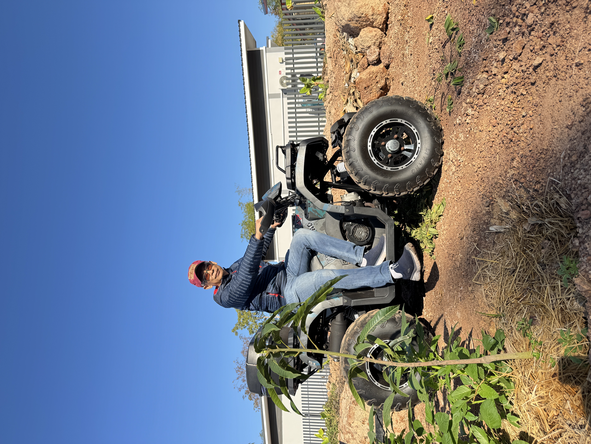
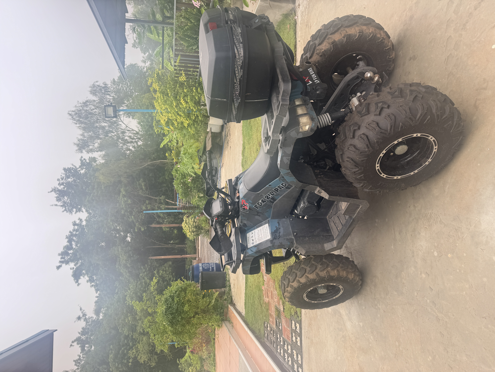
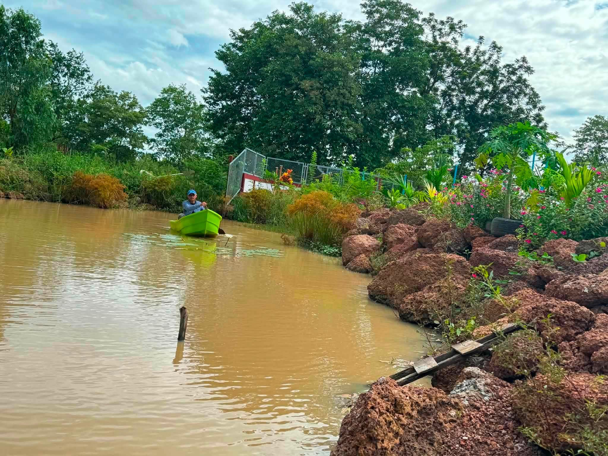
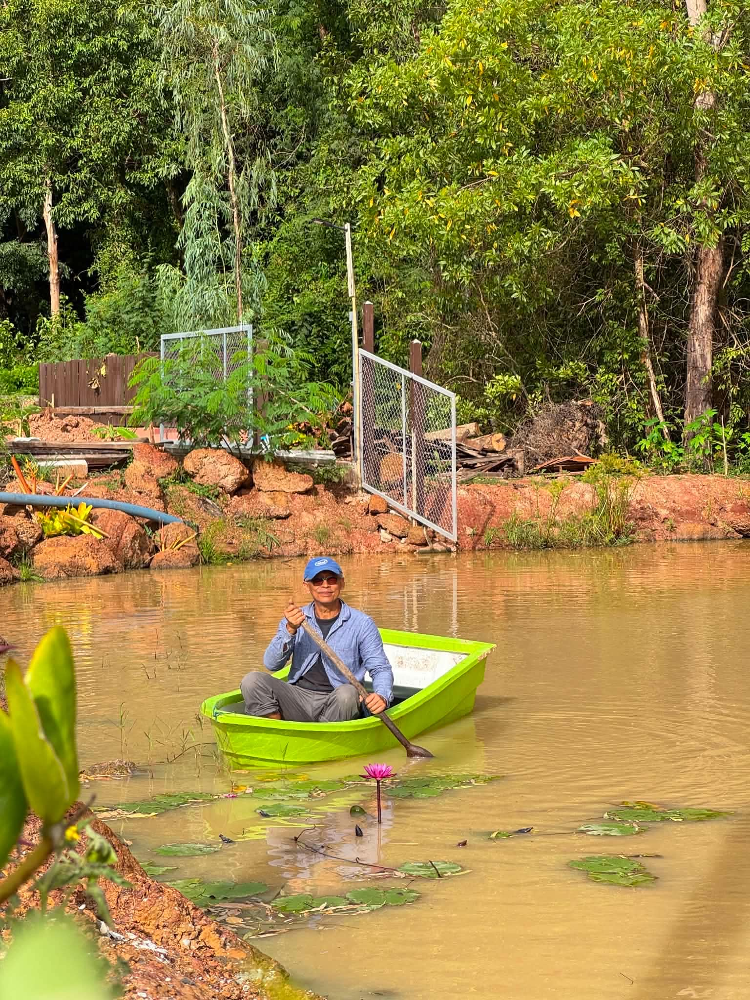
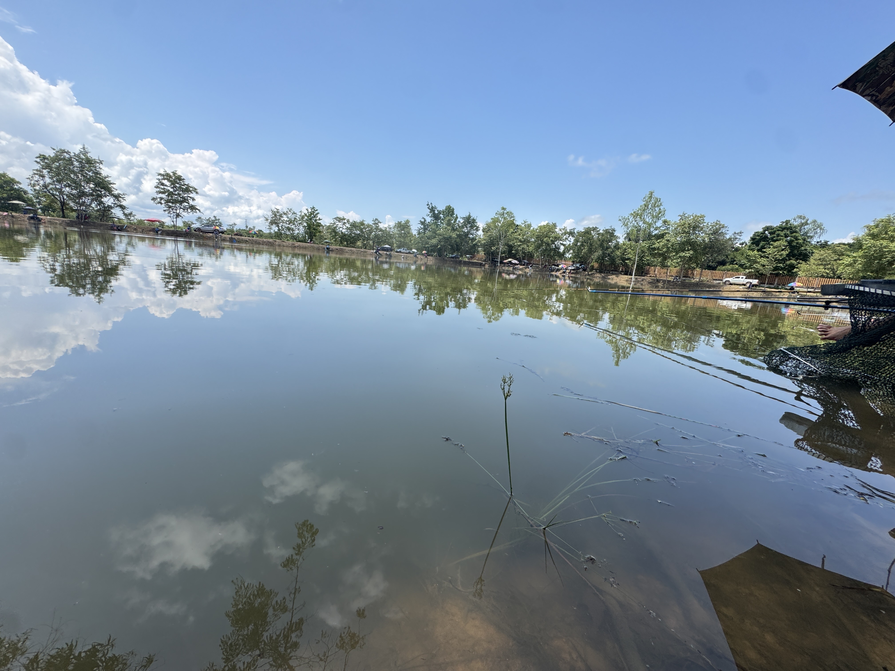
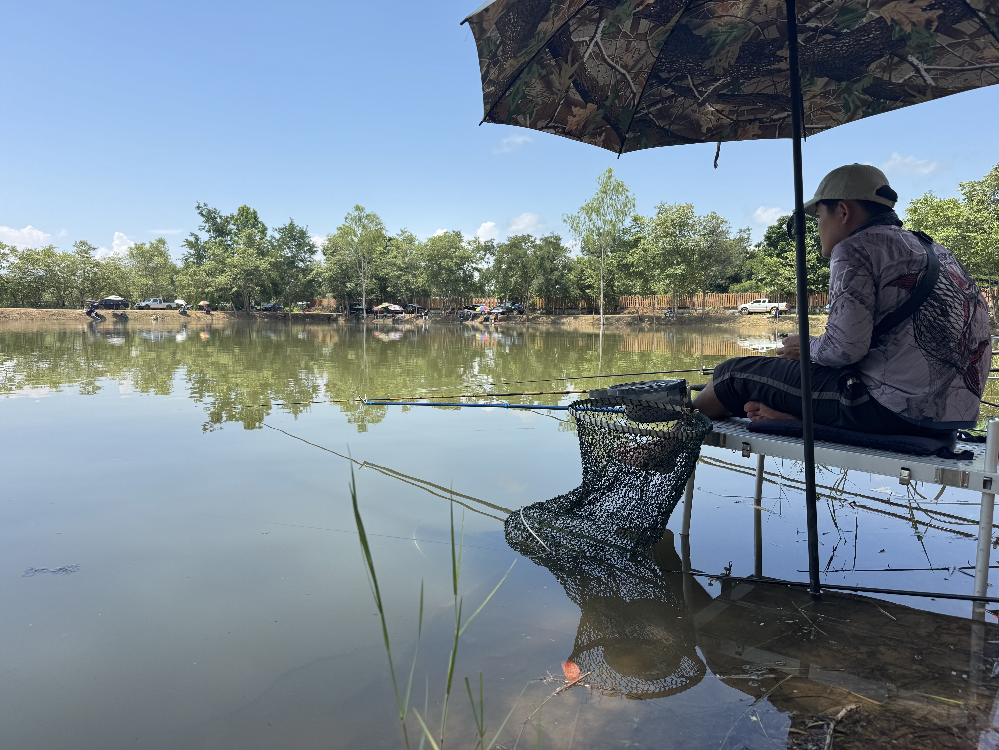

From exploring the countryside by ATV to quiet hours on the water, every day at Ban Oudomphong can be as active or as relaxed as you choose.


Discover the farm trails and surrounding countryside on one of our ATVs, available to rent during your stay. Prefer a gentler pace? Take a bicycle through quiet villages and rice fields.


Glide across our tranquil lake by boat, perfect for a quiet morning paddle, birdwatching, or watching the sun set over the water.


Spend a peaceful afternoon fishing from the banks, whether you are a first-timer or an experienced angler. Throughout the year we host seasonal local fishing competitions, a lively chance to meet the community and compete for prizes.
Our location makes it easy to discover the culture and landscapes of Isan and neighbouring Laos.
Night markets, local restaurants, shopping and Nong Prajak Park.
A lake carpeted with pink lotus flowers, best from December to February.
A UNESCO World Heritage archaeological site and museum.
The Mekong riverfront, and across the Friendship Bridge to the capital of Laos.
Mention ATV, boating or fishing when you book, and we'll arrange the rest.
Reserve Your Stay